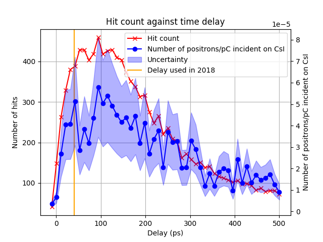

analysis package
Module contents
Analysis Package
This package contains the submodules for delay optimisation analysis. Runs the Simulation over pulse delay values and measures the number of hits and estimates the number of positron pairs generated. The simulation data saves to pickled dict files (.pickle).
- Modules:
hit_counter: The default hit counter
hit_counter_line: Default hit counter with additional parameters added to csv
hit_counter_twave: Default hit counter with additional parameters added to csv
hit_counter_gespec: Hit counter using a different Xray spectra for number of pairs estimation
Example
>>> from core.gamma import Gamma
>>> from core.xray import Xray
>>> from analysis.hit_counter import hit_counter
>>> xray = Xray(
>>> fwhm = 12,
>>> rotation = 0.698,
>>> n_samples_angular = 10,
>>> n_samples = 400
>>> )
>>> gamma = Gamma(
>>> x_pos = -12,
>>> pulse_length = 0.0135,
>>> height = 3.1,
>>> off_axis_dist = 1
>>> )
>>> counter = HitCounter(
>>> xray_bath = xray,
>>> gamma_pulse = gamma,
>>> n_samples_azimuthal = 5
>>> )
>>> counter.plot_hit_count(
>>> min_delay = -10,
>>> max_delay = 500,
>>> samples = 50,
>>> show_exp_value = True
>>> )
Output:
{kind=link}
analysis.hit_counter module
Defines the HitCounter class which inherits from the Simulation class. Counts the number of collisions between the gamma pulse and Xray bath by calculating future positions. Predicts number of positron pairs to be generated and received by the CsI detector.
- class analysis.hit_counter.HitCounter(xray_bath: Xray, gamma_pulse: Gamma, n_samples_azimuthal=1)[source]
Bases:
SimulationCounts the number of collisions between the X-ray bath and Gamma pulse
- n_samples_azimuthal
number of azimuthal samples to take for width of Xray pulse
- Type:
float
- calc_effective_d(phi: float, d: float) float[source]
Solves geometric problem to calculate effective off-axis displacement when looking at another azimuthal plane paramaterised by phi
- Parameters:
phi (float) – azimuthal angle being considered (radians)
d (float) – off-axial displacement (mm)
- Returns:
effective off-axis displacement
- Return type:
float
- calc_effective_height(r: float, phi: float, d: float) float[source]
Solves a geometric problem to find the new effective height of the gamma pulse when looking at an azimuthal plane of the x-ray bath. When phi = 0 the effective height is the radius of the beam
- Parameters:
r (float) – radius of gamma pulse (mm)
phi (float) – azimuthal angle being considered (radians)
d (float) – off-axial displacement (mm)
- Returns:
new effective height
- Return type:
float
- count_hits(delay: float) tuple[source]
Counts the total number of collisions for a given pulse timing
- Parameters:
delay (float) – time delay of gamma pulse to x-ray ignition (ps)
- Returns:
- A tuple containing:
float: number of collisions,
numpy.ndarray: array of coordinates for each hit (x, y, angles)
- Return type:
tuple[float, numpy.ndarray]
- est_npairs(angles: list, samples: int) list[source]
Estimates the number of positron pairs produced and lands on the CsI detector
- Parameters:
angles (list[float]) – list of angle coordinates for each detected hit
samples (int) – number of Xray coordinates generated
- Returns:
- list containing:
float: estimated number of positrons
float: uncertainty
- Return type:
list[float,float]
- get_n_samples_azimuthal() int[source]
Access method for n_samples_azimuthal
- Returns:
number of azimuthal samples to take
- Return type:
int
- get_params() dict[source]
Get parameters of Xray and Gamma objects
- Returns:
parameters of objects
- Return type:
dict
- plot_ang_dist(delay: float)[source]
Plots the angular distribution of hits for a pulse delay
- Parameters:
delay (float) – delay between gamma pulse and Xray ignition (ps)
- plot_hit_count(min_delay: float, max_delay: float, samples=50, **kwargs)[source]
Plots the hit count and estimated number of pairs for a range of delays
- Parameters:
min_delay (float) – Minumum pulse delay (ps)
max_delay (float) – Maximum pulse delay (ps)
samples (int, optional) – Number of delays to check.
50. (Defaults to) –
**kwargs – optional keyword arguments. show_exp_value (bool, optional): Whether to plot the delay used in 2018. Defaults to False. save_data (bool, optional): Whether to save the plot data to a csv. Defaults to False. plot_wait (float, optional): Time to leave plot open. Defaults to None. save_params (bool, optional): Whether to save parameters for Xray and Gamma objects. Defaults to False.
analysis.hit_counter_gespec module
Use a different Germanium energy spectra without the alumnium filter
- class analysis.hit_counter_gespec.HitCounterGe(xray_bath: Xray, gamma_pulse: Gamma, n_samples_azimuthal=1)[source]
Bases:
HitCounterCounts the number of collisions between the X-ray bath and Gamma pulse for a line source using an extended Xray spectrum for a Germanium source.
- Overriden methods:
- est_npairs(angles: list, samples: int) -> list:
Estimates the number of positron pairs produced and lands on the CsI detector using the new spectrum
- est_npairs(angles: list, samples: int) list[source]
Estimates the number of positron pairs produced and lands on the CsI detector
- Parameters:
angles (list[float]) – list of angle coordinates for each detected hit
samples (int) – number of Xray coordinates generated
- Returns:
- list containing:
float: estimated number of positrons
float: uncertainty
- Return type:
list[float,float]
analysis.hit_counter_line module
Defines the HitCounterLine class which inherits from the HitCounter class. Modifies the class to add the line source parameters to the parameter file output.
- class analysis.hit_counter_line.HitCounterLine(xray_bath: Xray, gamma_pulse: Gamma, n_samples_azimuthal=1)[source]
Bases:
HitCounterCounts the number of collisions between the X-ray bath and Gamma pulse for a line source
- Overridden methods:
get_params() -> dict: returns additional parameters
analysis.hit_counter_twave module
Defines the HitCounterTwave class which inherits from the HitCounter class. Modifies the class to add the travelling wave speed to the params file.
- class analysis.hit_counter_twave.HitCounterTwave(xray_bath: Xray, gamma_pulse: Gamma, n_samples_azimuthal=1)[source]
Bases:
HitCounterCounts the number of collisions between the X-ray bath and Gamma pulse for a line source
- Overriden methods:
get_params() -> dict: returns additional parameters